frentes clave: web, procesos, datos y nube.

Desarrollo de software y soluciones tecnologicas
Transformamos ideas y procesos en soluciones tecnológicas eficientes.
Desarrollamos páginas web, aplicaciones y sistemas personalizados para ayudar a empresas a digitalizar sus operaciones y mejorar su atención al cliente.
Soluciones escalables
Desarrollo personalizado
Acompañamiento técnico
dias para un primer producto funcional en proyectos acotados.
por ciento enfocados en soluciones medibles y mantenibles.
Problemas que resolvemos
Si esto pasa en tu empresa, Zenit puede ayudarte.
Antes de hablar de tecnologia, entendemos que proceso quieres mejorar y que resultado necesita tu negocio.
- ¿Tu negocio todavia maneja procesos manuales en Excel?
- ¿Necesitas una pagina web profesional para atraer nuevos clientes?
- ¿Tus sistemas no se comunican entre si?
- ¿Requieres automatizar tareas repetitivas?
- ¿Necesitas modernizar una aplicacion existente?
Diseñamos una solución adaptada a las necesidades reales de tu empresa.
Servicios y soluciones
Servicios tecnológicos para digitalizar y mejorar tu operación.
Agrupamos cada proyecto según el resultado que necesita tu empresa: atraer clientes, ordenar procesos, conectar sistemas o tomar mejores decisiones.
Desarrollo web
Presencia digital que genera oportunidades
Página de servicios, catálogo digital, landing page, formulario guiado, WhatsApp directo y medición de oportunidades.
Me interesa esto
Sistema a medida
Operación ordenada en una sola herramienta
Clientes, tareas, inventario, solicitudes, documentos y reportes conectados para trabajar con menos fricción.
Me interesa esto
Aplicación móvil
Procesos y atención desde el celular
Aplicaciones para Android y iOS, portales de autogestión, formularios móviles y soluciones conectadas con APIs.
Me interesa esto
Integraciones
Herramientas que se comunican entre sí
Automatización de tareas, notificaciones, consumo de APIs y conexión entre formularios, CRM, WhatsApp, correo, pagos o facturación.
Me interesa esto
Analítica
Indicadores para decidir con datos
Reportes, tableros de control y visualización de información para medir ventas, clientes, procesos y productividad.
Me interesa esto
Soporte y mejora
Sistemas existentes listos para crecer
Mantenimiento, corrección de errores, optimización, nuevas funciones, actualización tecnológica y acompañamiento posterior.
Me interesa estoVentajas de trabajar con Zenit
Beneficios concretos durante y después del desarrollo.
Soluciones adaptadas a cada negocio
Comunicación clara durante el desarrollo
Diseño responsive para computadoras y celulares
Buenas prácticas de seguridad
Documentación y soporte técnico
Tecnologías modernas y escalables
Tecnologías
Seleccionamos las herramientas según el tipo de solución.
Frontend
Angular, Blazor, Flutter
Backend
.NET, APIs REST, Python
Datos
SQL Server, PostgreSQL, Power BI
Infraestructura
Docker, nube, integración de servicios
Diagnostico interactivo
Elige tu necesidad principal y mira una ruta recomendada.
Marca el objetivo que tienes ahora y recibe una ruta inicial para convertirlo en una solucion concreta.
Ruta sugerida
Web comercial + WhatsApp inteligente
Landing de alto rendimiento, formulario guiado, mensajes prellenados y medicion de conversion para saber que canal trae clientes.
- Pagina rapida con llamados a la accion claros.
- Contacto por WhatsApp con mensaje prellenado.
- Panel inicial de metricas de leads.
Metodo Zenit
Avanzamos por etapas, con entregables visibles.
Descubrimiento
Entendemos el objetivo, el flujo actual, los riesgos y el resultado de negocio que vale la pena construir.
Prototipo
Convertimos la idea en pantallas, alcance y arquitectura inicial para validar antes de invertir de mas.
Construccion
Desarrollamos por ciclos cortos, revisamos contigo y dejamos el proyecto listo para operar.
Escala
Medimos, automatizamos, optimizamos y evolucionamos la solucion segun el crecimiento real.
Nosotros
Zenit nace para llevar la tecnologia al punto mas alto de cada negocio.
Trabajamos con una vision practica: entender el problema, construir lo necesario, medir resultados y mejorar con criterio tecnico.
Como trabajamos
- Hablamos claro sobre alcance, tiempos y prioridades.
- Construimos soluciones mantenibles, no parches dificiles de escalar.
- Acompanamos el crecimiento con mejoras, soporte y nuevas integraciones.
Contacto
Cuéntanos que quieres construir.
Completa el formulario y se abrira WhatsApp con un mensaje ordenado para iniciar la conversacion.
Preguntas frecuentes
Lo que un cliente suele preguntar antes de empezar.
¿Cuánto cuesta desarrollar una página web?
El precio depende del alcance, cantidad de secciones, funcionalidades, diseño, integraciones y contenido requerido. Para páginas web sencillas se pueden manejar planes orientativos; para sistemas o tiendas en línea conviene realizar una cotización personalizada.
¿Cuánto tiempo toma desarrollar un sistema?
Depende de la complejidad del proyecto. Una página o landing puede avanzar en pocos días; un sistema personalizado requiere levantamiento de requerimientos, diseño, desarrollo, pruebas y ajustes por etapas.
¿Trabajan con proyectos pequeños?
Sí. Podemos empezar con una página web, una automatización puntual, un formulario conectado a WhatsApp, un dashboard o una mejora específica sobre un sistema existente.
¿Ofrecen soporte después de la entrega?
Sí. Podemos acompañar con mantenimiento, corrección de errores, mejoras, actualizaciones, monitoreo y soporte técnico según las necesidades del proyecto.
¿Pueden mejorar un sistema que ya existe?
Sí. Revisamos el estado actual, detectamos problemas, proponemos mejoras y podemos modernizar funcionalidades, interfaces, rendimiento, integraciones o base de datos.
¿El cliente será propietario del sistema desarrollado?
El alcance de propiedad, código fuente, accesos, documentación y entregables se define desde la propuesta. La idea es que el cliente tenga claridad sobre qué recibe y cómo puede seguir operando su solución.
¿Cómo se realizan los pagos?
Normalmente se trabaja por etapas: anticipo para iniciar, pagos contra avances y saldo final al entregar. En proyectos de soporte o mantenimiento se puede manejar una modalidad mensual.
Siguiente paso
Conversemos sobre tu proyecto
Cuéntanos qué proceso deseas mejorar y evaluaremos la solución más adecuada para tu empresa.
Agendar una reunión